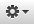

Responsive Resize
Removing Devices
You can easily remove Devices from the Devices bar from the Devices Panel.
- Open the 'Devices Panel' by selecting 'Add / Remove Devices…' from the Devices menu or from the Customize menu  , or use the keyboard shortcut ⌘D.
- Hover over the Device you want to remove in the Devices list.
- Click on the icon that appears on the device name.
- The Device will be instantly removed from the Devices bar.